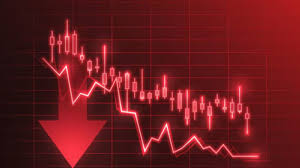

Scam 1992 is based on the real events surrounding India’s biggest stock market crash, triggered by a massive financial fraud committed by stockbroker Harshad Mehta in the early 1990s.
Harshad Mehta, a middle-class man with big dreams, discovered loopholes in India’s banking system. He illegally obtained huge sums of money from banks using fake Bank Receipts (BRs ) — documents meant for secure inter-bank transactions. Instead of using the funds for legitimate purposes, he pumped the money into the stock market to manipulate share prices and create artificial demand.
As stock prices soared, investors flooded the market, and Harshad gained fame as the Big Bull
of Dalal Street. The market boom appeared unstoppable — until it all came crashing down.
In April 1992, journalist Sucheta Dalal exposed the scam, revealing that Harshad had misused over ₹5,000 crores. This led to a sudden and sharp stock market crash:
Scam 1992 is not just a story of one man’s fraud — it’s a turning point in India’s economic history that highlighted the urgent need for reform, regulation, and honesty in the financial world.